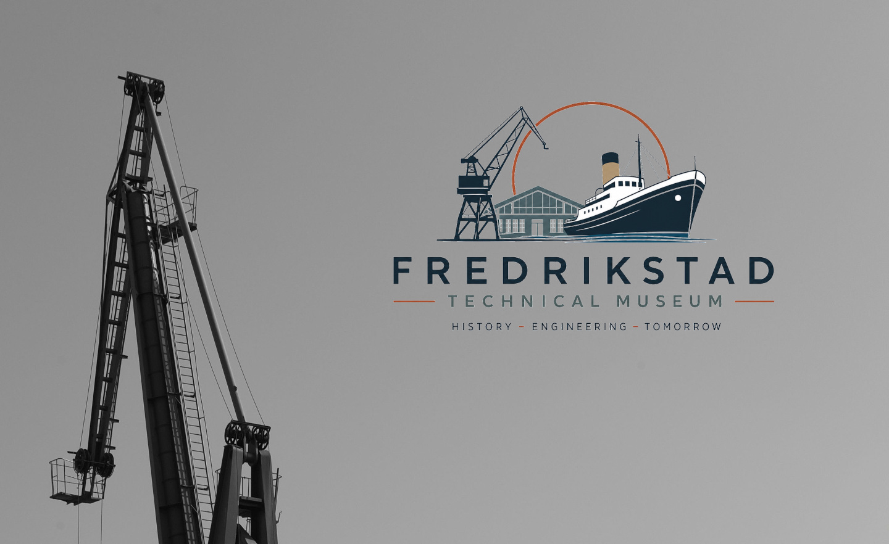
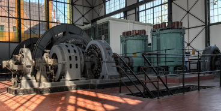
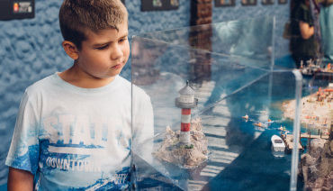

Buy TicketsDiscover the Story of Fredrikstad
Step into the world of Fredrikstad's industrial heritage, where history, engineering, and innovation come to life. Explore interactive exhibitions inspired by Fredrikstad Mekaniske Verksted, discover how ships were built, and experience hands-on activities designed for curious minds of all ages.
Whether you're visiting with family, friends, or your school, the museum invites you to build, explore, and discover the people, machines, and ideas that helped shape Fredrikstad—and continue to inspire the future.
Where History Builds the Future

Exhibitions
Explore three interactive exhibitions that bring Fredrikstad's industrial heritage to life. From the bustling shipyards of Fredrikstad Mekaniske Verksted to the people who helped shape the city, and the innovations driving tomorrow's maritime industries, each exhibition offers hands-on experiences for visitors of all ages. Discover the story of Fredrikstad through engineering, history, science, and creativity.

Family Activities
Get ready to build, explore, solve, and create together! Our family activities are designed to spark curiosity and encourage teamwork through hands-on challenges inspired by Fredrikstad's shipbuilding heritage.
Education
At the museum, learning comes alive through hands-on experiences, interactive exhibitions, and the fascinating story of Fredrikstad's industrial heritage. Inspired by the history of Fredrikstad Mekaniske Verksted, our educational programmes encourage pupils to explore how engineering, science, mathematics, and history have shaped both the local community and the wider world.
Visit us
Planning your visit is easy. Find everything you need to know before you arrive, including opening hours, admission, accessibility, directions, parking, and visitor facilities.
Whether you're visiting with family, friends, or a school group, we look forward to welcoming you to explore Fredrikstad's industrial heritage through hands-on experiences and interactive exhibitions.